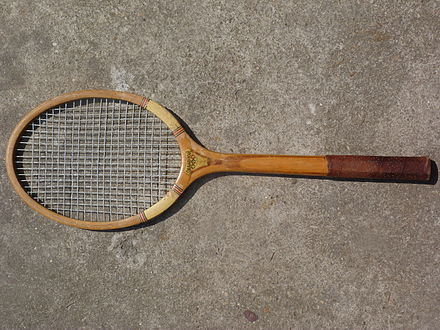

Tennis is a racket sport that is played either individually against a single opponent (singles) or between two teams of two players each (doubles). Each player uses a tennis racket that is strung with cord to strike a hollow rubber ball covered with felt over or around a net and into the opponent's court. The object of the game is to manoeuvre the ball in such a way that the opponent is not able to play a valid return. The player who is unable to return the ball validly will not gain a point, while the opposite player will.
Tennis is an Olympic sport and is played at all levels of society and at all ages. The sport can be played by anyone who can hold a racket, including wheelchair users. The original forms of tennis developed in France during the late Middle Ages. The modern form of tennis originated in Birmingham, England, in the late 19th century as lawn tennis. It had close connections both to various field (lawn) games such as croquet and bowls as well as to the older racket sport today called real tennis.
Historians believe that the game's ancient origin lay in 12th-century northern France, where a ball was struck with the palm of the hand.[12] Louis X of France was a keen player of jeu de paume ("game of the palm"), which evolved into real tennis, and became notable as the first person to construct indoor tennis courts in the modern style. Louis was unhappy with playing tennis outdoors and accordingly had indoor, enclosed courts made in Paris "around the end of the 13th century".[13] In due course this design spread across royal palaces all over Europe.
The components of a tennis racket include a handle, known as the grip, connected to a neck which joins a roughly elliptical frame that holds a matrix of tightly pulled strings. For the first 100 years of the modern game, rackets were made of wood and of standard size, and strings were of animal gut. Laminated wood construction yielded more strength in rackets used through most of the 20th century until first metal and then composites of carbon graphite, ceramics, and lighter metals such as titanium were introduced. These stronger materials enabled the production of oversized rackets that yielded yet more power. Meanwhile, technology led to the use of synthetic strings that match the feel of gut yet with added durability.
Tournaments are often organized by gender and number of players. Common tournament configurations include men's singles, women's singles, and doubles, where two players play on each side of the net. Tournaments may be organized for specific age groups, with upper age limits for youth and lower age limits for senior players. Example of this include the Orange Bowl and Les Petits As junior tournaments. There are also tournaments for players with disabilities, such as wheelchair tennis and deaf tennis. In the four Grand Slam tournaments, the singles draws are limited to 128 players for each gender.
| Grand Slam | First held | Location | Surface | Date | Prize Money |
|---|---|---|---|---|---|
| Australian Open | 1905 | Melbourne | Hard | Jan-Feb | $75,000,000 (2022) |
| French Open | 1891 | Paris | Clay | May-June | €42,661,000 (2022) |
| Wimbledon | 1877 | London | Grass | June-July | £40,350,000 (2022) |
| US Open | 1881 | New York City | Hard | Aug-Sep | US$57,462,000 (2021) |